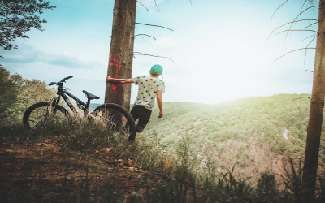
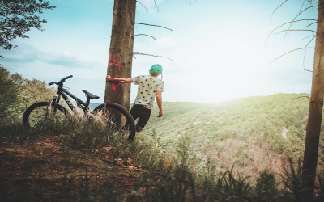

RIDE
to your next DESTINATION
2019 Tour dates
- Sept 19 - 29 - Deluxe Haute Route– Chamonix to Zermatt – Classic trek has a new standard SOLD OUT
- Sept 26 - Oct 5 - Scenic Alps by Rail– The Grand Train Tour of Switzerland SOLD OUT
- Sept 29 - Oct 5 - Discover Swiss Cuisine - Italian Inspired - A culinary adventure in Lugano SOLD OUT
- Oct 9 - 18 - Scenic Alps by Rail – The Grand Train Tour of Switzerland ONLY 4 SPOT
AVAILABLE
- Dec 3 - 11 - Christmas in Switzerland - Enjoy authentic Switzerland at its holiday best
AVAILABLE
- Dec 5 - 13 - Christmas in Switzerland - Enjoy authentic Switzerland at its holiday best
AVAILABLE

 
